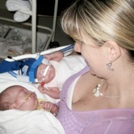

The period of pregnancy is a period of pleasant anticipation, full of dreams and expectations. The premature birth of a child or the birth of a child with a health problem is a situation that by its nature creates intense anxiety for parents and disturbs their psychological balance. When a parent learns that his child is in NICU, he feels to lose control of his life and starts filling negative emotions. The entrance and the hospitalization of an infant in NICU is , in most cases, an unexpected event and brings his parents in front of many problems, sometimes with unpredictable consequences for themselves and the rest of the family.
The view of their baby, surrounded by several unknown devices and machines and the briefing for the problems that it may face, can cause parents emotional crisis. The parents whose baby is hospitalized in NICU may not be able, initially, to touch it or feed it, so they are forced to leave the care of their baby to the NICU’s staff. So they feel weak , filled with anger and frustration. Especially the mother may also have feelings of guilt or helplessness. The feelings of parents may change from one moment to the other, depending on the progress of their baby’s health. The hope may be the successor to sorrow and vice-versa and uncertainty can last long for some parents.
All these feelings are absolutely normal and almost the same for all parents whose baby is hospitalised in NICU. And the main emotion is anxiety.
Anxiety affects both your body and your mind and it can reach a point where it starts to change your relationships with people around you and to make your daily life more difficult.
As the events related with the hospitalization of your baby and cause stress to you, will not disappear rapidly, it is preferable for you to learn and detect symptoms of anxiety and find ways to limit them.
Researches , involving parents whose children have been hospitalized in NICU, have shown that there are some simple things that can help to overcome the negative emotions and stress:
- Express your stress and talk about your feelings and your concerns. This helps to work out the traumatic experience and find ways to manage it.

- Take care of yourself , get involved with your hobbies and interests, find time for a walk or a relaxing bath. These are ways to get rid of stress and accumulated tension and express your feelings through art, music or even sports. Remember that if you care for your own needs and yourself , you will be in a better position and you will provide more things to your baby slowly. -Rely on your family, get all the support you can and talk with them openly about the problems of the newborn.
-Be properly informed about the progress of your baby’s health and strengthen the relationship of trust with the staff of the unit. The environment of NICU is changing from day to day, there are many faces and the pace of work is intense. Sometimes there are emergency cases that determine the priorities of the staff. Do not let these “everyday” events for an NICU to change the level of your confidence for the people who support your baby. The NICU’s team is there with continuity and consistency to provide the best possible care to your baby. Be free to express your questions and your concerns and discuss them with the staff.
- Take an active part in the care of your baby. One of the main causes of stress for parents whose newborn is in NICU, is the disruption of parenting role. Talk to NICU’s staff to find ways to participate in the care of your baby at each stage of hospitalization.
-
If in the NICU where your baby is hospitalized, parents’ concentrations are carried out, take part in them because teamwork and sharing feelings with other parents, will help you.